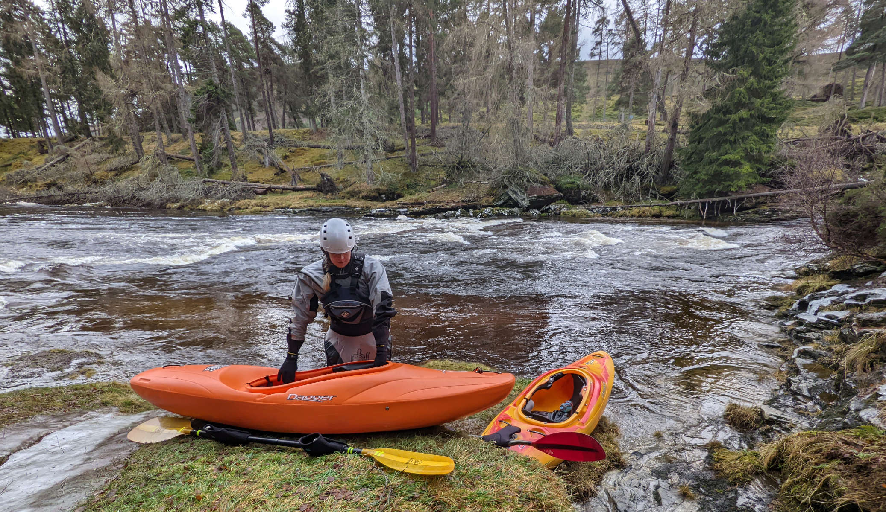
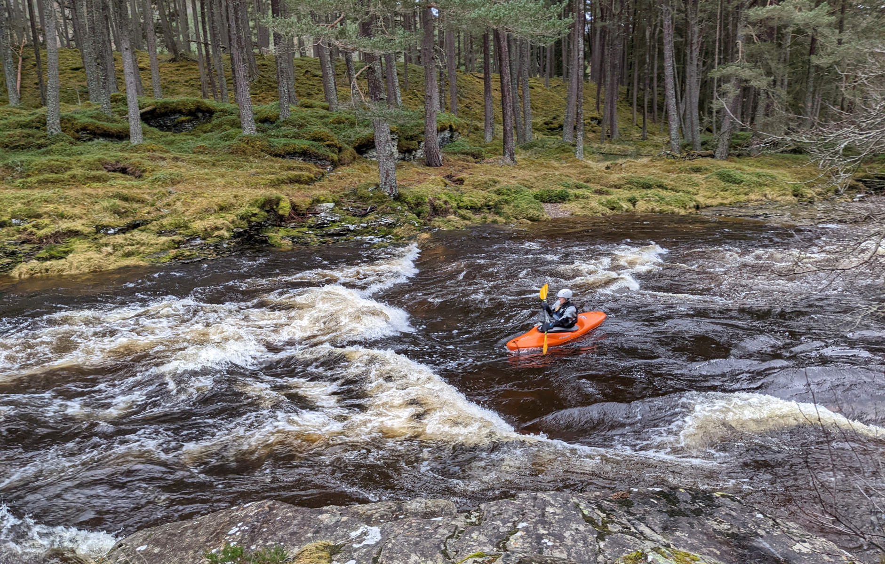
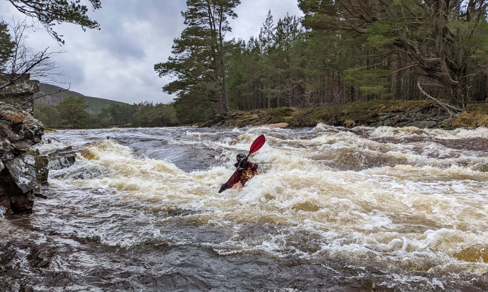

We were staying in an Airbnb nearby. Temperatures had gone up since we climbed Lochnagar, and the mountains were melting. What does that mean? Yes, rivers are up! Lucky for us, we had our white water kayaks with us, so we thought it to be time to explore the upper Dee.

The River Dee starts in the Cairngorms and runs out to the ocean in Aberdeen. It had run past Lochnagar, and we followed it by car past Braemar, a cute mountain town, to the Linn of Dee, which is as far up as you can get by car. This is a popular place for people to enter the Cairngorms and now for us to take off for our paddling trip. We had stashed a bike near Braemar, and had scouted by car as much of the river as we could see. This part of the river was in our river paddling guide, so we knew not to expect too much difficult terrain. However, a recent storm had pushed over many of the trees in Aberdeenshire, way more than around our area, so we wanted to avoid ending up in a tree.

We took off, and after some startup nervousness we were on our way. There were a few rapids that required us getting out and scouting for the best line (or deciding to walk around), but mostly a friendly current pushed us along. The views were amazing, there are hills on both sides of the wide river valley, with higher mountains behind them, which we could see little bits off in between the clouds. Nice to be out in our river boats again.
